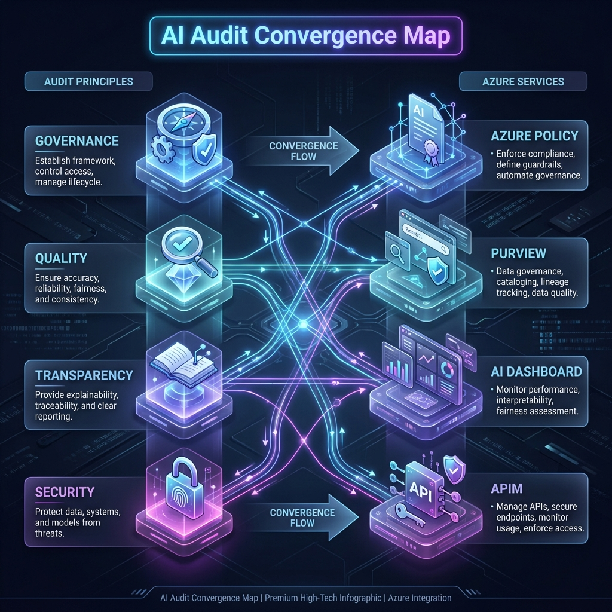

Most AI architectures survive the developer demo but fail the regulator's audit. To close this gap, we must synthesize global governance frameworks with local cloud rigor.
In the regulated world, "building it" is only half the battle. The other half is proving that it’s safe, fair, and compliant. When I look at external frameworks like the AI Architecture Audit methodology, I don't just see a checklist; I see a blueprint for architectural integrity.
In this post, I’ll show you how to map these high-level audit principles directly to Azure-native technical controls. This is how you move from a "Trust me, it's safe" posture to a "Here is the proof" posture.
The Gap: Demo-Ready vs. Regulator-Ready
| Audit Pillar | The Architecture "Demo" | The "Regulator" Reality |
|---|---|---|
| Governance | Informal trust & manual access logs. | Azure Policy 'Deny' & automated guardrails. |
| Data Quality | Raw storage buckets with no metadata. | Microsoft Purview end-to-end lineage. |
| Security | API keys embedded in app config files. | AI Gateway (APIM) with Zero-Trust. |
| Explainability | Opaque LLM outputs with no monitoring. | Responsible AI Dashboards. |

The Convergence Map: Mapping abstract Audit Principles to concrete Azure Service implementations.
1. Governance & Accountability
An audit starts with asking: "Who is responsible if the model hallucinations cause a financial loss?"
The Azure Implementation: We don't just assign roles; we bake them into the infrastructure. By using Entra ID (Active Directory) combined with Azure Policy, we enforce a "Governance-as-Code" model. If a developer tries to deploy an AI model outside of a compliant Landing Zone, the audit engine triggers an immediate block.
2. Data Quality & Integrity
The audit framework asks: "Is the training data clean, lawful, and secured?"
3. Transparency & Explainability
"Can you explain why the AI reached this conclusion?" This is the "Magic Box" problem.
By integrating the Responsible AI Dashboard within Azure Machine Learning, we generate error analysis and feature importance reports. We move the transparency from a PDF manual into a living, real-time dashboard.
From the Post-Mortem Trenches
In my experience, auditors don't ask for a code review; they ask for evidence of consistency. A screenshot of a policy compliance dashboard is worth more than 1,000 pages of technical documentation.
4. Security & The "AI Fortress"
The framework requires "adequate information security." In the cloud, this means Zero Trust.
We implement this via the AI Gateway Pattern. No direct access to LLMs. Everything flows through Azure API Management, which handles the JWT validation, rate limiting, and full-stack logging required for a GRC audit.
Operationalize: The ALZ Assessment Tool
Frameworks are useless without measurements. To move from theory to reality, I recommend the Azure ALZ Modern Assessment Tool.
Azure ALZ Modern Assessment
A comprehensive, web-based tool that evaluates your Azure implementation against official Microsoft FastTrack best practices. It features automated updates for AI Landing Zone checklists and generates executive-ready PowerPoint reports.